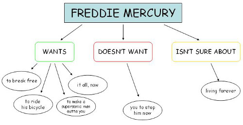
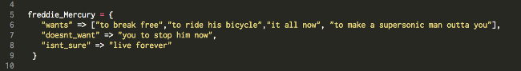

Whaddup, Ruby Noobs? In this edition of my DBC technical blog, I am tasked with teaching you a bit about classes and data structures. Read on to treat yourself to some knowlege:

So, if you bothered to read the embedded links I provided in my introductory sentence, (which, I can't fault you if you didn't) you would've come across two somewhat long, but rather approachable Wikipedia articles on those subjects. Cool right? It's my hope that this blog post will be at least as approachable as those artices, with the added benefit of being exponentially shorter. So to begin, at it's most basic, a data structure is a way to organize information in a computer. There's not just one data structure; oh no, there are many different kinds whose organization may be particularly suited for one kind of data retrieval or another, depending.
A real world example that comes to mind that might help to conceptualize the idea of data strutures is a flow-chart--especially ones that assist with binary decision-making. Take this example:
Flow chart brought to you courtesy of blobsite.net
If you were tasked with the decision of organizing Freddie Mercury's wants in a format that's easily retrievable by a computer, you might do so by organizing them into a data structure called a hash, like so:
If you don't remember what a hash is, it's cool. Just check out my previous blog post on the subject. "But, Dionne," you say "isn't there also an array in that mess of code you just posted?" You're correct, dear reader. There's also an array at the first key's value. And if you remember from my post an array's also a data structure. It's particularly useful in this hash because Freddie Mercury has a lot of wants. Having his wants organized into a separate structure just makes them easier to access, as you'll see in a bit.
So, Where do Classes Come in to All of This?
Well, classes have some similarities to data structures, in the sense that they organize information. Unlike data structures though, classes can contain more than just raw data. Let's get back to our Freddie Mercury example from earlier. Look at this code:
class FreddieMercury
def initialize
@freddie_Mercury = {
"wants" => ["to break free","to ride his bicycle","it all now", "to make a supersonic man outta you"],
"doesnt_want" => "you to stop him now",
"isnt_sure" => "live forever"
}
things = rand(0..@freddie_Mercury["wants"].length-1)
@wants = @freddie_Mercury["wants"][things]
@doesnt_want = @freddie_Mercury["doesnt_want"]
@isnt_sure = @freddie_Mercury["isnt_sure"]
p "Does Freddie Mercury want #{@wants}? Y/N?"
self.get_input
end
def get_input
@answer = gets.chomp.upcase.to_s
self.check
end
def check
if @answer == "N"
p "The only thing Freddie Mercury doesn't want is for #{@doesnt_want}."
elsif @answer == "Y"
p "Okay. You know Freddie Mercury."
else
p "Freddie Mercury isn't sure if he wants to #{@isnt_sure}. I'm not sure what letters you entered. Y/N?"
self.get_input
end
end
end
Above, I've created a class called FreddieMercury. See that capitalization? It's an important naming convention that follows best practices with regard to classes in Ruby. You can also see that my FreddieMercury class contains the hash we talked about earlier. The class also contains other things--and the function of those other things is what makes classes special.
See all that code up there that begins and ends with def and end? Those are called methods. Methods tell a computer to actually do something to the object the method is called on. In the case of my code, my #get_input method retrieves information from a user and my #check method measures that input against the hash I've stored in my FreddieMercury class. When methods are inside of classes like FreddieMercury those methods can be used on objects that are in the class. If I'd made a different class, for example, a class called LisaLeftEyeLopez I wouldn't be able to use my FreddieMercury methods (unless I imported those methods, but that's a subject for a different blog entry).
Look again at FreddieMercury. Do you also see the code that's prefaced by the @ symbol? You might recognize how that code functions within the methods if you look closely. Those are variables, and that special @ notation makes them available throughout the class; they're called instance variables and all the methods in the class can access them.
What about that #initialize business, that's at the very beginning of the class? Whelp, any time you create or define a class, you've gotta intialize it. Initialization makes the class (and all the things within the class) accessible to a programmer. The notation to bring about a new instance of a class is Class.new
Now, it's all fine and well to talk about how to make a class, what a class contains, and how to make a class accessible, but what is a class exactly? Well, check out some of the examples on this great Ruby tutorial page. Compare those example that to the examples I've included above, and I think you'll have a good introduction into this programming concept.
P.S. Any idea what my FreddieMercury does? Run it in IRB to find out!